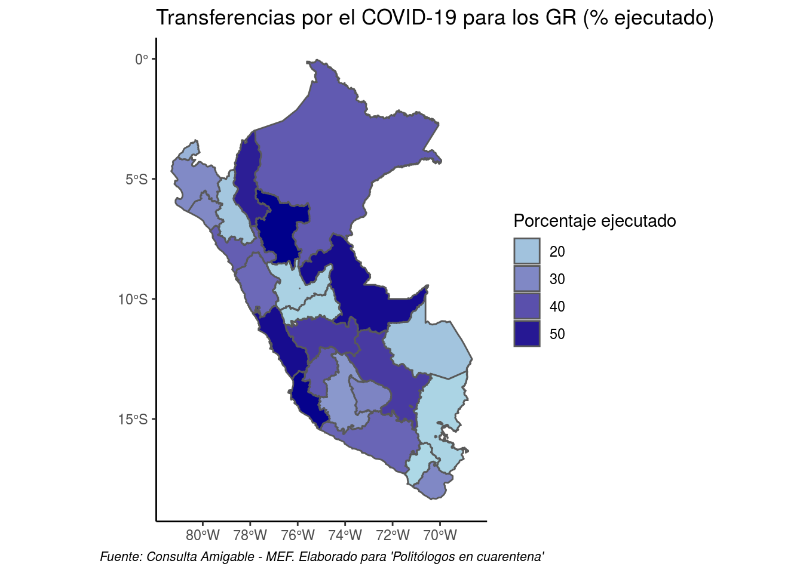

Politólogos en cuarentena
Presentación
Evolución del COVID-19
Seguimiento nacional
Seguimiento sub-nacional
Seguimiento sub-nacional
3.1. Gobiernos regionales
3.1.1. Datos sobre casos y muestras realizadas
Datos actualizados al 30/04/2020. Fuente: Sala Situacional-MINSA
3.1.2. Transferencias a Gobiernos regionales y su ejecución
Datos actualizados al 01/05/2020. Fuente: Consulta amigable - MEF
3.1.3. Presencia de casos positivos y nivel de gasto de los Gobiernos Regionales
